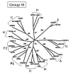
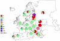
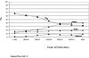
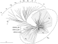
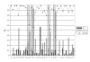
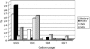
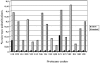
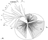
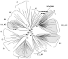
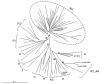

Abstract
The Human Immunodeficiency Virus type 1 (HIV-1) is classified into genetic groups, subtypes and sub-subtypes which show a specific geographic distribution pattern. The HIV-1 epidemic in Italy, as in most of the Western Countries, has traditionally affected the Intra-venous drug user (IDU) and Homosexual (Homo) risk groups and has been sustained by the genetic B subtype. In the last years, however, the HIV-1 transmission rate among heterosexuals has dramatically increased, becoming the prevalent transmission route. In fact, while the traditional risk groups have high levels of knowledge and avoid high-risk practices, the heterosexuals do not sufficiently perceive the risk of HIV-1 infection. This misperception, linked to the growing number of immigrants from non-Western Countries, where non-B clades and circulating recombinant forms (CRFs) are prevalent, is progressively introducing HIV-1 variants of non-B subtype in the Italian epidemic. This is in agreement with reports from other Western European Countries.
In this context, the Italian HIV-1 epidemic is still characterized by low subtype heterogeneity and represents a paradigmatic example of the European situation. The continuous molecular evolution of the B subtype HIV-1 isolates, characteristic of a long-lasting epidemic, together with the introduction of new subtypes as well as recombinant forms may have significant implications for diagnostic, treatment, and vaccine development. The study and monitoring of the genetic evolution of the HIV-1 represent, therefore, an essential strategy for controlling the local as well as global HIV-1 epidemic and for developing efficient preventive and therapeutic strategies.
Background
HIV-1 genetic subtypes
The Human Immunodeficiency Virus type 1 (HIV-1) isolates are classified in three groups:group M (main), a group O (outlier) as well as a group N (non-M/non-O) [1-3]. The group M, responsible for the majority of infections in the HIV-1 worldwide epidemic, can be further subdivided into 10 recognized phylogenetic subtypes or clades (A – K, excluding E, which is actually a CRF), which are approximately equidistant from one another (Fig. 1).
Figure 1. Evolutionary relationships among non-recombinant HIV-1 strains. The phylogenetic tree shows the subtypes of the M (main) HIV-1 group. The phylogenetic analysis has been performed on near-full length sequences and is based on neighbor joining method. The reliability of the internal branches defining a subtype has been estimated from 1'000 bootstrap replicates and the values are expressed as percentage.
HIV-1 phylogenetic classifications are currently based either on nucleotide sequences derived from multiple sub genomic regions (gag, pol and env) of the same isolates or on full-length genome sequence analysis. This approach has revealed virus isolates in which phylogenetic relations with different subtypes switch along their genomes. These inter-subtype recombinant forms are thought to have originated in individuals multiply infected with viruses of two or more subtypes. This results in the generation of several recombinants called "unique recombinant forms," or URFs [4]. When an identical recombinant virus is identified in at least three epidemiologically unlinked people, and is characterized by full-length genome sequencing, it can be designated as circulating recombinant forms (CRFs) [5-7]. The intra-genomic recombination appears to be a very frequent event and the CRFs account for 18% of incident infections in the global HIV-1 pandemic [8,9].
On a global scale, according to recent studies, the most prevalent HIV-1 genetic forms are subtypes A, B, C and CRF02_AG, with subtype C accounting for almost 50% of all HIV-1 infections worldwide. In Europe, in particular, subtype B is the circulating main genetic form, while subtype A viruses are predominant in east European countries formerly constituting the Soviet Union, where they are mainly transmitted among injecting drug users. Unlike all the surrounding Countries, Romania is characterized by an F subtype epidemic (Fig. 2).
Figure 2. Geographical distribution of HIV-1 genetic forms circulating in Europe. Genetic forms predominant in the different European Countries are shown.
HIV-1 epidemic in Italy
Injecting drug users (IDUs) have been the most affected risk group during the first phase of the HIV epidemic in Italy and the HIV-1 B subtype, in accordance with other Western Countries, is the molecular form circulating among IDUs [10]. However, the annual percentages of AIDS cases reported in IDUs have gradually decreased to 32.3% in 2004 [11], in part as consequence of prevention programs [12,13]. In parallel, the AIDS cases reported in heterosexual individuals has continuously increased during the epidemic, becoming in 2004 the most prevalent risk factor for AIDS (40.4%) (Fig. 3) [10]. Similarly, in 2005 heterosexual contact accounts for over half (55%) of HIV infections newly diagnosed in the EU, nearly half (46%) of them were diagnosed in immigrants/migrants, primarily from sub-Saharan Africa, and most of these infections were acquired outside the EU (EuroHIV, 2006).
Figure 3. Distribution of AIDS cases in adult population in Italy. The percentage of AIDS cases for each risk group, over the HIV-1 epidemic, is indicated by lines. Unknown, indicates the undefined risk for infection.
More than 10% of heterosexual individuals diagnosed with AIDS in Italy are either immigrants from endemic regions for HIV-1 (6.87%) or their Italian partners (3.03%). This epidemiological evidence, not considering all the HIV-1 infections derived also from traveling abroad, suggests that at least 10% of the viruses transmitted through heterosexual contacts could potentially belong to non-B subtypes and CRFs. This has been recently reported in other European Countries, with a higher prevalence due to an older tradition of immigration waves and much tighter historical as well as economic links with countries endemic for HIV-1 infection [14-22]
Molecular evolution of the B-clade env sequences in the Italian epidemic
The biological relevance of genetic variations in the env gene is due to the central role of the envelope protein in the virus-host interaction. In particular, the V3 loop contains epitopes for strain-restricted neutralizing antibodies, it is a major determinant for viral tropism and co-receptor usage, and its orientation partially masks the CD4 and chemokine receptor binding sites [23-31].
The analysis performed including the B-subtype Italian sequences [32-45] has shown a progressive increase of nucleotide divergence in this region, increasing from 9.2% between isolates identified in the late 80's [46], to 17.51% between isolates identified in the early 2000's [33,45]. This closely resembles the expected evolution of a region under a strong immunological pressure during a long-lasting epidemic [45,47].
Furthermore, a phylogenetic analysis performed on the same C2-V3 env region (position 7001 to 7196 of HIV-1HXB2) has shown the presence of an "Italian branch" where the HIV-1 isolates are distributed into three major clusters, each of them including several sub-clusters (Fig. 4). The 143 sequences derived from the different studies, selecting one sequence per patient deposited at the Los Alamos Database, do not form independent clusters and/or sub-clusters but are rather found inter-dispersed in the sub-clusters. This is likely due to the fact that the majority of the samples have been identified in Italy during overlapping periods in the early 90's. The distribution pattern of the sequences within the sub-clusters is not significantly associated to the risk factor for HIV-1 infection (IVDU, homo- or heterosexuality), by nonparametric Kruskal-Wallis test (p < 0,096). Moreover, the B1 cluster includes the majority of sequences identified in a broad time range, while the B3 cluster is prevalently based on recent sequences identified in our study. Moreover, as shown in Fig. 4, Italian B clade variants do not cluster with sequences from known "B clade-derived" CRFs.
Figure 4. Phylogenetic tree of HIV-1 env gene C2-V3 region from Italian B-clade isolates. The C2-V3 env region (position 7001 to 7196 of HIV-1HXB2) of 143 Italian HIV-1 isolates, identified in the whole epidemic, has been aligned to reference sequences of all Group M subtypes, in order to generate the phylogenetic tree by the neighbor-joining method. The BIT indicates the "Italian branch" of the tree, which includes three major clusters B1 – B3. The reliability has been estimated from 1'000 bootstrap replicates. For editorial convenience, only the percentage value for the Italian Branch has been shown. All other values are > 90%.
Rate of amino acid substitution and codon usage in the B-clade V3 env sequences
The B clade C2-V3 env sequences identified during the HIV-1 Italian epidemic have been subsequently analyzed for the frequency of synonymous and non-synonymous substitutions at each codon corresponding to the 35 aa forming the V3 loop of the env gene. The analysis has shown that very few codons (C1, R2, G17, G28, C35) are characterized by no substitutions or synonymous substitutions only, indicating the absolute conservation of those specific amino acid residues. In contrast, the vast majority of codons are characterized by a higher percentage of non-synonymous substitutions leading to amino acid changes. Nevertheless, the only residues found with a frequency < 80% at specific positions in the crown of the V3 loop are S11, N13, T22 and E25, although these do not seem to influence the binding of the gp120-CD4 complex to the CCR5 (Fig. 5). This is, in fact, mainly influenced by substitutions in the stem of the loop [48].
Figure 5. Evolution pattern of the V3 loop. The percentage of synonymous and non-synonymous substitutions in each of the 35 codons of the V3 Loop are indicated, together with the percentage of amino acid residue preservation at the specific position. The positions where the residue is found in < 80% of the sequences, are highlighted with light-gray boxes.
Furthermore, amino acid substitutions in the V3 loop show a significant uniform distribution in the HIV-1 sequences identified during the Italian epidemic, with the exception of the T-to-A22 substitution (within the tip of the loop) which is prevalent in the isolates identified in the early 2000's.
The codon usage in the V3 region has been previously associated with HIV-1 isolates identified in patients with different risk factors. In particular, considering the second glycine at the tip of the V3 loop, the GGG codon has been associated with the homosexual risk group and the GGC codon with the IDU risk group [43,49-51]. In Italian B subtype sequences, the GGC codon is strongly associated with intra-venous transmission (p < 0.015), while the GGG codon is strongly associated with sexual (homo and hetero) transmission of HIV-1 (p < 0.007) (Fig. 6). The striking segregation of the GGC and GGG codons in the virus variants transmitted through different routes could be the consequence of different selections, including viral tropism, genetic bottlenecks or a founder effect.
Figure 6. Distribution of codons in risk groups. The distribution of the four codons encoding the second glycine residue in the crown of the env gene V3 loop (GPGRAFYT) has been analyzed in HIV-1 sequences, identified in infected individuals with different risk practices.
Non-B-clade env sequences in Italian epidemic
So far, during the entire HIV-1 epidemic in Italy, only seven non-B clade env sequences have been described, identified in heterosexual individuals (either immigrants from sub-Saharan Africa or their Italian partners) [44,45]; [33,34]. In particular, a very recent near-full length sequence analysis has shown that a HIV-1 isolate originally classified as A is actually close to the A3 sub-subtype and does not cluster in any of the known subtypes. It could potentially represents a novel sub-subtype, which needs to be confirmed with the identification of at least two additional related isolates in unlinked individuals [52].
Molecular evolution of the B-clade protease sequences in Italian epidemic
The sequences relative to HIV-1 pol gene, and the protease region in particular, have been extensively analyzed and collected only from the year 2000, consequent to appearance of viral isolates resistant to protease inhibitors (PI), introduced as a component of anti-retroviral therapy (ART) combinations. This effect has made obvious the need to evaluate the resistant mutants to guide the choice of drug combinations in heavily drug-treated HIV-1-infected individuals as well as in recent treatment-naïve seropositive individuals.
The nucleotide divergence of the protease region during the HIV-1 epidemic in Italy has been evaluated including all the B-subtype Italian sequences from the published reports [53-64]. The analysis, unlike the analyses of the V3 env region, has shown a rather constant nucleotide divergence in this region (6.83% – 7.68%) over the 2000–2006 period. These results confirm that, also in a long-lasting epidemic, the pol genes (and the protease in particular) are not driven to genetic change by immunologic pressure.
"Pharmacologic" pressure, instead, plays a significant role in the evolution of the protease gene by inducing the constant appearance and spread of mutant variants with degrees of drug resistance [65]. In this perspective, the synonymous and non-synonymous substitutions have been evaluated for the protease sequences described in Italy, showing the presence of "hot spot" in the 99 protease codons, where the frequency of non-synonymous substitutions has increased over the 2000–2006 period with the presence of PI drugs in the ART combination. In particular, sequences identified in ART-treated groups [54-56] showed a > 2.5 fold-increase in the frequency of non-synonymous substitutions at codons strongly associated with PI drug resistance, compared to sequences identified in a naïve group [62] (Fig. 7).
Figure 7. Evolution pattern of the protease. The percentage of non-synonymous substitutions in each of the protease codons were evaluated. The codons with the most significant difference between the sequences identified in naïve and ART-treated individuals are shown. The amino acid residues correspond to those found in the sequences identified in naïve individuals.
The phylogenetic analysis performed on the protease region of the HIV-1 B-subtype Italian sequences showed, as for the env region, an "Italian branch" including three major clusters, each of them formed by several sub-clusters (Fig. 8). Also for the protease gene, as for the env C2-V3 region, sequences derived from the different studies do not form independent clusters and/or sub-clusters but are rather found inter-dispersed in the tree. Moreover, a distribution pattern based on the risk factor for HIV-1 infection (IVDU, homo- or heterosexuality) could not be assessed due to undisclosed demographic information. It is to be underscored that, as result of this phylogenetic analysis, the sequence 3193_1620A (Accession # DQ348068), deposited as B-subtype isolate [56], showed a strong phylogenetic link to the F1 subtype, suggesting that a revised classification of this isolate in the Los Alamos DataBase is appropriate.
Figure 8. Phylogenetic tree of HIV-1 protease gene from Italian B-clade isolates. The protease region of Italian B-clade HIV-1 isolates, identified in the whole epidemic, has been aligned to reference sequences of all Group M subtypes, in order to generate the phylogenetic tree by the neighbor-joining method. The BIT indicates the "Italian branch" of the tree, which includes three major clusters B1 – B3. The reliability has been estimated from 1'000 bootstrap replicates. For editorial convenience, only the percentage value for the Italian Branch has been shown. All other values are > 90%.
The phylogenetic analyses, therefore, strongly suggest that, as for the env region, the protease region of the pol gene in HIV-1 B subtypes in Italy are derived from three main molecular ancestors, which have continuously evolved and spread among infected individuals during the epidemic.
Non-B-clade protease sequences in Italian epidemic
The non-B clade protease sequences, described in Italy over the 2000–2006 period [52,55,58,59,63,66,67], show intra-clade nucleotide divergences ranging from 3,34% (CRF01_AE) to 8,74% (F1), which are comparable to the divergence values observed for the B-clade sequences. Moreover, the phylogenetic analysis shows a limited evolution for each subtype, suggesting a recent introduction into Italy, although the limited number of isolates does not allow significant strong correlations to be made (Fig. 9).
Figure 9. Phylogenetic tree of HIV-1 protease gene from Italian non-B clade isolates. The protease gene of non-B clade HIV-1 isolates, identified in the whole epidemic, has been aligned to reference sequences of all Group M subtypes, in order to generate the phylogenetic tree by the neighbor-joining method. The Italian sequences, in each subtype/CRF, are indicated by light-gray box. The reliability has been estimated from 1'000 bootstrap replicates and the values are expressed as percentage.
Gag sequences in Italian epidemic
Nucleotide sequence analysis of the gag gene has not been a priority over the HIV-1 epidemic in Italy, and a very limited number of B as well as non-B clade sequences have been described [44,45,52,68]. A comprehensive phylogenetic analysis confirms the original subtype classification of the isolates and shows a distribution of the Italian B-subtype in different sub-clusters, where the sequences deriving from the different studies are found interspersed (Fig. 10). The lack of "cross-epidemic" sequences, however, does not allow inferences on phylogenetic evolution in gag.
Figure 10. Phylogenetic tree of HIV-1 gag p17 region from Italian isolates. The gag p17 region of B as well as non-B clade HIV-1 isolates, identified in the whole epidemic, has been aligned to reference sequences of all Group M subtypes, in order to generate the phylogenetic tree by the neighbor-joining method. The BIT indicates the "Italian branch" of the tree; the Italian non-B sequences are individually indicated. The reliability has been estimated from 1’000 bootstrap replicates and only values >90% are shown.
Concluding remarks
The B clade remains predominant and is circulating among all risk groups in the Italian epidemic, as observed all across Western European Countries [69]. Nevertheless, the structural genes of B subtype HIV-1 variants show a continuous spectrum of genetic diversification, although the currently circulating viruses appear to derive from a few early "founders". The introduction and the spread of non-B subtype HIV-1 isolates in the Italian epidemic, in contrast, appear to be still limited. In particular, as reported in other Western European countries, it is strongly associated with heterosexual transmission between local and immigrant/migrant partners. In this regard, it has to be mentioned that the general strategy of sequencing and performing phylogenetic analyses only on the env sub-genomic region, pursued in Italy and worldwide for many years, could have resulted in missing the identification of novel CRFs early in the Italian epidemic.
The Italian HIV-1 epidemic, therefore, represents a paradigmatic example of the European situation, being still characterized by low subtype heterogeneity. However, the slow introduction and diffusion of non-B subtypes in the population could progressively change the overall scenario and drive the need of adapting the diagnostic and treatment strategies currently used in European Countries.
Authors' contributions
LB conceived of the study, analyzed data and drafted the manuscript; MT carried out the molecular genetic studies; MLT participated in the design of the study and performed the statistical analysis; FMB participated in its design, coordination and critically reviewed the manuscript. All authors read and approved the final manuscript
Acknowledgements
This study was supported by grants from the Ministero Italiano della Sanità (Ricerca Corrente and Progetto Finalizzato AIDS 2002) and the ICSC-World Lab, Lausanne, Switzerland (Project MCD-2/7). We are grateful to Marv Reitz (Inst. Human Virol., Baltimore – MD) for his critical reading of the manuscript. MT is a Ph.D. student in "Experimental Medicine and Oncology" Program, at the Univ. of Insubria – Varese, Italy.
References
-
Gurtler L, Eberle J, von Brunn A, Knapp S, Hauser HP, Zekeng L, Tsague JM, Selegny E, Kaptue L: A new subtype of human immunodeficiency virus type 1 (MVP-5180) from Cameroon.
J Virol 1994, 68:1581-1585. PubMed Abstract | Publisher Full Text | PubMed Central Full Text
-
Simon F, Mauclere P, Roques P, Loussert-Ajaka I, Muller-Trutwin MC, Saragosti S, Georges-Courbot MC, Barre-Sinoussi F, Brun-Vezinet F: Identification of a new human immunodeficiency virue type 1 distinct from group M and group O.
Nat Med 1998, 4:1032-1037. PubMed Abstract | Publisher Full Text
-
Ayouba A, Souquieres S, Njinku B, Martin PM, Muller-Trutwin MC, Roques P, Barre-Sinoussi F, Mauclere P, Simon F, Nerrienet E: HIV-1 group N among HIV-1-seropositive individuals in Cameroon.
AIDS 2000, 14:2623-2625. PubMed Abstract | Publisher Full Text
-
McCutchan FE: Global epidemiology of HIV.
J Med Virol 2006, 78 Suppl 1:S7-S12. PubMed Abstract | Publisher Full Text
-
Robertson DL, Anderson JP, Bradac JA, Carr JK, Foley B, Funkhouser RK, Gao F, Hahn BH, Kalish ML, Kuiken C, Learn GH, Leitner T, McCutchan FE, Osmanov S, Peeters M, Pieniazek D, Salminen M, Sharp PM, Wolinsky S, Korber B: HIV-1 Nomenclature Proposal. [http://www.hiv.lanl.gov/content/hiv-db/COMPENDIUM/1999/6/nomenclature.pdf] webcite
In Human Retroviruses and AIDS, 1999: A compilation and analysis of nucleic acid and amino acid sequences Edited by Kuiken C, Foley B, Hahn BH, Korber B, McCutchan FE, Marx PA, Mellors JW, Mullins JI, Sodroski J and Wolinsky S. Los Alamos, Los Alamos Natl. Laboratory; 2000, 492-505.
-
Peeters M: Recombinant HIV sequences: their role in the global epidemic. [http://www.hiv.lanl.gov/content/immunology/pdf/2000/1/Peeters.pdf] webcite
In HIV sequence compendium 2000 Edited by Kuiken C, Foley B, Hahn B, McCutchan FE, Mellors JW, Mullins JI, Sodroski J, Wolinsky S and Korber B. Los Alamos, Theoretical Biology and Biophysics Group, Los Alamos National Laboratory; 2001, 54-72.
-
Los Alamos Laboratory: The Circulating Recombinant Forms (CRFs). [http://www.hiv.lanl.gov/content/hiv-db/CRFs/CRFs.html] webcite
2007.
-
Osmanov S, Pattou C, Walker N, Schwardlander B, Esparza J, WHO Network for HIV isolation and characterization: Estimated global distribution and regional spread of HIV-1 genetic subtypes in the year 2000.
J Acquir Immune Defic Syndr 2002, 29:184-190. PubMed Abstract | Publisher Full Text
-
Hemelaar J, Gouws E, Ghys PD, Osmanov S: Global and regional distribution of HIV-1 genetic subtypes and recombinants in 2004.
AIDS 2006, 20:W13-W23. PubMed Abstract | Publisher Full Text
-
Center IAIDSO: Aggiornamento dei casi di AIDS notificati Italia - June 2005.
Not Ist Sup Sanità 2005., 18 S1:
-
Suligoi B, Magliochetti N, Nicoletti G, Pezzotti P, Rezza G: Trends in HIV prevalence among drug users attending public drug-treatment centres in Italy: 1990-2000.
J Med Virol 2004, 73:1-6. PubMed Abstract | Publisher Full Text
-
Nicolosi A, Molinari S, Musicco M, Saracco A, Ziliani N, Lazzarin A: Positive modification of injecting behavior among intravenous heroin users from Milan and northern Italy 1987-1989. NISDA Study.
Br J Addict 1991, 86:91-102. PubMed Abstract | Publisher Full Text
-
Rezza G, De Rose A, Dorrucci M, Arpino C, Serafin I: Declining prevalence of HIV infection among injecting drug users entering drug treatment in Italy: 1990-1991.
Eur J Epidemiol 1993, 9:663-666. PubMed Abstract | Publisher Full Text
-
Snoeck J, Van Dooren S, Van Laethem K, Derdelinckx I, Van Wijngaerden E, De Clercq E, Vandamme AM: Prevalence and origin of HIV-1 group M subtypes among patients attending a Belgian hospital in 1999.
Virus Research 2002, 85:95-107. PubMed Abstract | Publisher Full Text
-
Fransen K, Buvé A, Nkengasong JN, Laga M, van der Groen G: Longstanding presence in Belgians of multiple non-B HIV-1 subtypes.
Lancet 1996, 347:1403-1403. PubMed Abstract | Publisher Full Text
-
Iversen AKN, Learn GH, Fugger L, Gerstoft J, Mullins JI, Skinhoj P: Presence of multiple HIV subtypes and a high frequency of subtype chimeric viruses in heterosexually infected women.
J Acquir Immune Defic Syndr 1999, 22:325-332. PubMed Abstract | Publisher Full Text
-
Leitner T, Escanilla D, Marquina S, Wahlberg J, Brostrom C, Hansson HB, Uhlen M, Albert J: Biological and molecular characterization of subtype D, G, and A/D recombinant HIV-1 transmission in Sweden.
Virology 1995, 209:136-146. PubMed Abstract | Publisher Full Text
-
Boni J, Pyra H, Gebhardt M, Perrin L, Burgisser P, Matter L, Fierz W, Erb P, Piffaretti JC, Minder E, Grob P, Burckhardt JJ, Zwahlen M, Schupbach J: High frequency of non-B subtypes in newly diagnosed HIV-1 infections in Switzerland.
J Acquir Immune Defic Syndr 1999, 22:174-179. PubMed Abstract | Publisher Full Text
-
Couturier E, Damond F, Roques P, Fleury HJ, Barin F, Brunet JB, Brun-Vezinet F, Simon F: HIV-1 diversity in France, 1996-1998. The AC 11 laboratory network.
AIDS 2000, 14:289-296. PubMed Abstract | Publisher Full Text
-
Paraskevis D, Magiorkinis E, Theodoridou M, Mostrou G, Papaevangelou V, Kiosses VG, Hatzakis A, Matsianotis N: Molecular epidemiology of vertical human immunodeficiency virus type 1 transmission in Greece: evidence of non-B subtypes.
J Hum Virol 1999, 2(6):339-43. PubMed Abstract
-
Devereux H, Loveday C, Burke A, Dann L, Johnson M, Phillips A: The prevalence of non-B subtype HIV-1 in a London HIV/AIDS outpatient clinic.
AIDS 1999, 13:142-142. PubMed Abstract | Publisher Full Text
-
Holguin A, Alvarez A, Soriano V: High prevalence of HIV-1 subtype G and natural polymorphisms at the protease gene among HIV-infected immigrants in Madrid.
AIDS 2002, 16:1163-70.. PubMed Abstract | Publisher Full Text
-
Carrillo A, Ratner L: Human immunodeficiency virus type 1 tropism for T-lymphoid cell lines: role of the V3 loop and C4 envelope determinants.
J Virol 1996, 70:1301-1309. PubMed Abstract | Publisher Full Text | PubMed Central Full Text
-
Chesebro B, Wehrly K, Nishio J, Perryman S: Mapping of independent V3 envelope determinants of human immunodeficiency virus type 1 macrophage tropism and syncytium formation in lymphocytes.
J Virol 1996, 70:9055-9059. PubMed Abstract | Publisher Full Text | PubMed Central Full Text
-
Hwang SS, Boyle TJ, Lyerly HK, Cullen BR: Identification of the envelope V3 loop as the primary determinant of cell tropism in HIV-1.
Science 1991, 253:71-74. PubMed Abstract | Publisher Full Text
-
Parren PW, Moore JP, Burton DR, Sattentau QJ: The neutralizing antibody response to HIV-1: viral evasion and escape from humoral immunity.
AIDS 1999, 13 Suppl A:S137-S162. PubMed Abstract | Publisher Full Text
-
Rizzuto CD, Wyatt R, Hernandez-Ramos N, Sun Y, Kwong PD, Hendrickson WA, Sodroski J: A conserved HIV gp120 glycoprotein structure involved in chemokine receptor binding.
Science 1998, 280:1949-1953. PubMed Abstract | Publisher Full Text
-
Shioda T, Levy JA, Cheng-Mayer C: Small amino acid changes in the V3 hypervariable region of gp120 can affect the T-cell line and macrophage tropism of human immunodeficiency virus type 1.
Proc Natl Acad Sci USA 1992, 89:9434-9438. PubMed Abstract | Publisher Full Text | PubMed Central Full Text
-
Ghaffari G, Tuttle DL, Briggs D, Burkhardt BR, Bhatt D, Andiman WA, Sleasman JW, Goodenow MM: Complex determinants in human immunodeficiency virus type 1 envelope gp120 mediate CXCR4-dependent infection of macrophages.
J Virol 2005, 79:13250-13261. PubMed Abstract | Publisher Full Text | PubMed Central Full Text
-
Briggs DR, Tuttle DL, Sleasman JW, Goodenow MM: Envelope V3 amino acid sequence predicts HIV-1 phenotype (co-receptor usage and tropism for macrophages).
AIDS 2000, 14:2937-2939. PubMed Abstract | Publisher Full Text
-
Jensen MA, Li FS, van 't Wout AB, Nickle DC, Shriner D, He HX, McLaughlin S, Shankarappa R, Margolick JB, Mullins JI: Improved coreceptor usage prediction and genotypic monitoring of R5-to-X4 transition by motif analysis of human immunodeficiency virus type 1 env V3 loop sequences.
J Virol 2003, 77:13376-13388. PubMed Abstract | Publisher Full Text | PubMed Central Full Text
-
Scarlatti G, Leitner T, Halapi E, Wahlberg J, Marchisio P, Clerici-Schoeller MA, Wigzell H, Fenyo EM, Albert J, Uhlen M, Rossi P: Comparison of variable region 3 sequences of human immunodeficiency virus type 1 from infected children with the RNA and DNA sequences of the virus populations of their mothers.
Proc Natl Acad Sci USA 1993, 90:1721-1725. PubMed Abstract | Publisher Full Text | PubMed Central Full Text
-
Bagnarelli P, Vecchi M, Burighel N, Bellanova D, Menzo S, Clementi M, De RA: Genotypic and phenotypic correlates of the HIV Type 1 env gene evolution in infected children with discordant response to antiretroviral therapy.
AIDS Res Hum Retroviruses 2004, 20:1306-1313. PubMed Abstract | Publisher Full Text
-
Binley JM, Wrin T, Korber B, Zwick MB, Wang M, Chappey C, Stiegler G, Kunert R, Zolla-Pazner S, Katinger H, Petropoulos CJ, Burton DR: Comprehensive cross-clade neutralization analysis of a panel of anti-human immunodeficiency virus type 1 monoclonal antibodies.
J Virol 2004, 78:13232-13252. PubMed Abstract | Publisher Full Text | PubMed Central Full Text
-
Buonaguro L, Greco D, Tornesello ML, Rago M, Zaccarelli M, Curcio F, Sguazzo N, Pipolo G, Beth-Giraldo E, Buonaguro FM, Giraldo G: Analysis of HIV-1 env gene V3 loop sequence in a southern italian cohort of intravenous drug users.
AIDS 1994, 8:268-269. PubMed Abstract | Publisher Full Text
-
Mammano F, Salvatori F, Ometto L, Panozzo M, Chieco-Bianchi L, De Rossi A: Relationship between the V3 loop and the phenotypes of human immunodeficiency virus type 1 (HIV-1) isolates from children perinatally infected with HIV-1.
J Virol 1995, 69:82-92.. PubMed Abstract | Publisher Full Text | PubMed Central Full Text
-
Halapi E, Leitner T, Jansson M, Scarlatti G, Orlandi P, Romiti L, Albert J, Wigzell H, Rossi P: Correlation between HIV sequence evolution, specific immune response and clinical outcome in vertically infected infants.
AIDS 1997, 11:1709-1717. PubMed Abstract | Publisher Full Text
-
Balotta C, Bagnarelli P, Riva C, Valenza A, Antinori S, Colombo MC, Sampaolesi R, Violin M, Moroni M, Clementi M, Galli M: Comparable biological and molecular determinants in HIV type 1- infected long-term nonprogressors and recently infected individuals.
AIDS Res Hum Retroviruses 1997, 13:337-341. PubMed Abstract
-
Salvatori F, Masiero S, Giaquinto C, Wade CM, Leigh Brown AJ, Chieco-Bianchi L, De Rossi A: Evolution of human immunodeficiency virus type 1 in perinatally infected infants with rapid and slow progression to disease.
J Virol 1997, 71(6):4694-4706. PubMed Abstract | Publisher Full Text | PubMed Central Full Text
-
Scarlatti G, Tresoldi E, Björndal A, Fredriksson R, Colognesi C, Deng HK, Malnati M, Plebani A, Siccardi A, Littman DR, Fenyo EM, Lusso P: In vivo evolution of HIV-1 co-receptor usage and sensitivity to chemokine-mediated suppression.
Nat Med 1997, 3:1259-1265. PubMed Abstract | Publisher Full Text
-
Menzo S, Sampaolesi R, Vicenzi E, Santagostino E, Liuzzi G, Chirianni A, Piazza M, Cohen OJ, Violin M, Zhou D: Rare mutations in a domain crucial for V3-loop structure prevail in replicating HIV from long-term non-progressors.
AIDS 1998, 12(9):985-997. PubMed Abstract | Publisher Full Text
-
Bagnarelli P, Mazzola F, Menzo S, Montroni M, Butini L, Clementi M: Host-specific modulation of the selective constraints driving human immunodeficiency virus type 1 env gene evolution.
J Virol 1999, 73:3764-3777. PubMed Abstract | Publisher Full Text | PubMed Central Full Text
-
Casado C, Urtasun I, Saragosti S, Chaix ML, De Rossi A, Cattelan AM, Dietrich U, Lopez-Galindez C: Different distribution of HIV type 1 genetic variants in European patients with distinct risk practices.
AIDS Res Hum Retroviruses 2000, 16:299-304. PubMed Abstract | Publisher Full Text
-
Buonaguro L, Tagliamonte M, Tornesello ML, Ciuffreda D, Capiluppi B, Lopalco L, Lazzarin A, Tambussi G, Buonaguro FM: Molecular and phylogenetic characterization of HIV variants in Italian primary HIV infections (PHI): identification of non-B subtype variants.
J Biol Regul Homeost Agents 2002, 16(1):44-48. PubMed Abstract
-
Buonaguro L, Tagliamonte M, Tornesello ML, Pilotti E, Casoli C, Lazzarin A, Tambussi G, Ciccozzi M, Rezza G, Buonaguro FM: Screening of HIV-1 isolates by reverse Heteroduplex Mobility Assay and identification of non-B subtypes in Italy.
J Acquir Immune Defic Syndr 2004, 37(2):1295-1306. PubMed Abstract | Publisher Full Text
-
Op de Coul ELM, Prins M, Cornelissen M, van der Schoot A, Boufassa F, Brettle RP, Hernandez-Aguado I, Schiffer V, McMenamin J, Rezza G, Robertson R, Zangerle R, Goudsmit J, Coutinho RA, Lukashov V: Using phylogenetic analysis to trace HIV-1 migration among western European injecting drug users seroconverting from 1984 to 1997.
AIDS 2001, 15:257-266. PubMed Abstract | Publisher Full Text
-
Kuiken C, Zwart G, Baan E, Coutinho RA, van den Hoek JA, Goudsmit J: Increasing antigenic and genetic diversity of the V3 variable domain of the human immunodeficiency virus envelope protein in the course of the AIDS epidemic.
Proc Natl Acad Sci USA 1993, 90:9061-9065. PubMed Abstract | Publisher Full Text | PubMed Central Full Text
-
Cormier EG, Dragic T: The crown and stem of the V3 loop play distinct roles in human immunodeficiency virus type 1 envelope glycoprotein interactions with the CCR5 coreceptor.
J Virol 2002, 76:8953-8957. PubMed Abstract | Publisher Full Text | PubMed Central Full Text
-
Kuiken C, Goudsmit J: Silent mutation pattern in V3 sequences distinguishes virus according to risk group in Europe.
AIDS Res Hum Retroviruses 1994, 10:319-320. PubMed Abstract
-
Kuiken C, Cornelissen M, Zorgdrager F, Hartman S, Gibbs AJ, Goudsmit J: Consistent risk group-associated differences in human immunodeficiency virus type 1 vpr, vpu and V3 sequences despite independent evolution.
J Gen Virol 1996, 77:783-792. PubMed Abstract | Publisher Full Text
-
Adwan G, Papa A, Kouidou S, Alexiou S, Malissiovas N, Ntoutsos I, Kiosses B, Antoniadis A: HIV type 1 sequences with GGC substitution in injecting drug users in Greece.
AIDS Res Hum Retroviruses 1999, 15:679-680. PubMed Abstract | Publisher Full Text
-
Tagliamonte M, Vidal N, Tornesello ML, Peeters M, Buonaguro FM, Buonaguro L: Genetic and phylogenetic characterization of structural genes from non-B HIV-1 subtypes in Italy.
AIDS Res Hum Retroviruses 2006, 22:1045-1051. PubMed Abstract | Publisher Full Text
-
Romano L, Venturi G, Ferruzzi R, Riccio ML, Corsi P, Leoncini F, Vinattieri A, Incandela L, Valensin PE, Zazzi M: Detection of genotypically drug-resistant HIV-1 variants and non-B subtypes in recently infected antiretroviral-naive adults in Italy.
AIDS 2000, 14:2204-2206. PubMed Abstract | Publisher Full Text
-
Svicher V, Ceccherini-Silberstein F, Erba F, Santoro M, Gori C, Bellocchi MC, Giannella S, Trotta MP, Monforte A, Antinori A, Perno CF: Novel human immunodeficiency virus type 1 protease mutations potentially involved in resistance to protease inhibitors.
Antimicrob Agents Chemother 2005, 49:2015-2025. PubMed Abstract | Publisher Full Text | PubMed Central Full Text
-
Ceccherini-Silberstein F, Erba F, Gago F, Bertoli A, Forbici F, Bellocchi MC, Gori C, d'Arrigo R, Marcon L, Balotta C, Antinori A, Monforte AD, Perno CF: Identification of the minimal conserved structure of HIV-1 protease in the presence and absence of drug pressure.
AIDS 2004, 18:F11-F19. PubMed Abstract | Publisher Full Text
-
Svicher V, Sing T, Santoro MM, Forbici F, Rodriguez-Barrios F, Bertoli A, Beerenwinkel N, Bellocchi MC, Gago F, d'Arminio MA, Antinori A, Lengauer T, Ceccherini-Silberstein F, Perno CF: Involvement of novel human immunodeficiency virus type 1 reverse transcriptase mutations in the regulation of resistance to nucleoside inhibitors.
J Virol 2006, 80:7186-7198. PubMed Abstract | Publisher Full Text | PubMed Central Full Text
-
Saracino A, Monno L, Scudeller L, Cibelli DC, Tartaglia A, Punzi G, Torti C, Lo CS, Mazzotta F, Scotto G, Carosi G, Angarano G: Impact of unreported HIV-1 reverse transcriptase mutations on phenotypic resistance to nucleoside and non-nucleoside inhibitors.
J Med Virol 2006, 78:9-17. PubMed Abstract | Publisher Full Text
-
Balotta C, Violin M, Monno L, Bagnarelli P, Riva C, Facchi G, Berlusconi A, Lippi M, Rusconi S, Clementi M, Galli M, Angarano G: Prevalence of multiple dideoxynucleoside analogue resistance (MddNR) in a multicenter cohort of HIV-1-infected Italian patients with virologic failure.
J Acquir Immune Defic Syndr 2000, 24(3):232-240. PubMed Abstract | Publisher Full Text
-
Balotta C, Facchi G, Violin M, Van Dooren S, Cozzi-Lepri A, Forbici F, Bertoli A, Riva C, Senese D, Caramello P, Carnevale G, Rizzardini G, Cremonini L, Monno L, Rezza G, Perno CF, Ippolito G, d'Arminio-Monforte A, Vandamme AM, Moroni M: Increasing prevalence of non-clade B HIV-1 strains in heterosexual men and women, as monitored by analysis of reverse transcriptase and protease sequences.
J Acquir Immune Defic Syndr 2001, 27:499-505. PubMed Abstract | Publisher Full Text
-
Cinque P, Presi S, Bestetti A, Pierotti C, Racca S, Boeri E, Morelli P, Carrera P, Ferrari M, Lazzarin A: Effect of genotypic resistance on the virologic response to highly active antiretroviral therapy in cerebrospinal fluid.
AIDS Res Hum Retroviruses 2001, 17:377-383. PubMed Abstract | Publisher Full Text
-
La Seta-Catamancio S, Citterio P, Kurtagic S, Galli M, Rusconi S: In vivo evolution of the human immunodeficiency virus type 1 gag-protease region and manteinance of reverse transcriptase resistance following prolonged drug exposure.
J Clin Microbiol 2001, 39:1124-1129. PubMed Abstract | Publisher Full Text | PubMed Central Full Text
-
Perno CF, Cozzi-Lepri A, Balotta C, Pezzotti P, Angarano G, Arici C, Narciso P, Orani A, Raise E, Scalzini A, Poggio A, Ippolito G, Moroni M, Monforte AD: Impact of mutations conferring reduced susceptibility to lamivudine on the response to antiretroviral therapy.
Antivir Ther 2001, 6:195-198. PubMed Abstract
-
Venturi G, Romano L, Carli T, Corsi P, Pippi L, Valensin PE, Zazzi M: Divergent distribution of HIV-1 drug-resistant variants on and off antiretroviral therapy.
Antivir Ther 2002, 7:245-250. PubMed Abstract
-
Monno L, Punzi G, Scarabaggio T, Saracino A, Brindicci G, Fiore JR, Iambrenghi OC, Caputi Iambrenghi O, Di Stefano M, Pastore G, Angarano G: Mutational patterns of paired blood and rectal biopsies in HIV-infected patients on HAART.
J Med Virol 2003, 70:1-9. PubMed Abstract | Publisher Full Text
-
Daar ES, Richman DD: Confronting the emergence of drug-resistant HIV type 1: impact of antiretroviral therapy on individual and population resistance.
AIDS Res Hum Retroviruses 2005, 21:343-357. PubMed Abstract | Publisher Full Text
-
Monno L, Brindicci G, Lo CS, Punzi G, Scarabaggio T, Riva C, Di BC, Pierotti P, Saracino A, Lagioia A, Mazzotta F, Balotta C, Angarano G: HIV-1 subtypes and circulating recombinant forms (CRFs) from HIV-infected patients residing in two regions of central and southern Italy.
J Med Virol 2005, 75:483-490. PubMed Abstract | Publisher Full Text
-
Tramuto F, Vitale F, Bonura F, Romano N: Detection of HIV type 1 non-B subtypes in Sicily, Italy.
AIDS Res Hum Retroviruses 2004, 20:251-254. PubMed Abstract | Publisher Full Text
-
Abbate I, Cappiello G, Longo R, Ursitti A, Spano A, Calcaterra S, Dianzani F, Antinori A, Capobianchi MR: Cell membrane proteins and quasispecies compartmentalization of CSF and plasma HIV-1 from aids patients with neurological disorders.
Infect Genet Evol 2005, 5:247-253. PubMed Abstract | Publisher Full Text
-
Laboratory LA: Distribution of HIV-1 sequences. [http://www.hiv.lanl.gov/components/hiv-db/new_geography/geography.comp] webcite
2007.